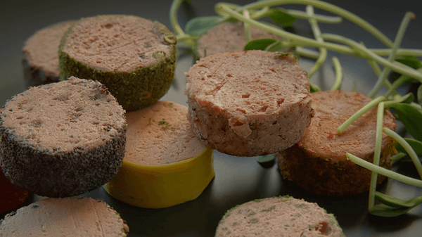
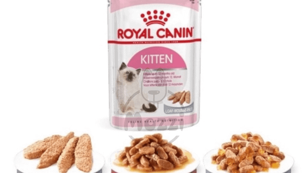

Tieu de
Các nội dung chính
Pate cho mèo là một lựa chọn phổ biến trong khẩu phần ăn hàng ngày, nhờ khả năng cung cấp độ ẩm, protein dễ hấp thu và hương vị kích thích vị giác. Tuy nhiên, để tối ưu giá trị dinh dưỡng cho mèo ở từng giai đoạn, việc lựa chọn sản phẩm phù hợp trở thành mối quan tâm hàng đầu. Pate cho mèo loại nào tốt cho mèo con và trưởng thành? Bài viết dưới đây sẽ phân tích chi tiết các tiêu chí lựa chọn, đồng thời gợi ý những thương hiệu chất lượng đang được ưa chuộng A.
Lợi ích của pate cho mèo đối với sức khỏe thú cưng
Pate cho mèo được đánh giá là một trong những loại thực phẩm thiết yếu mang lại nhiều lợi ích sức khỏe nếu được sử dụng đúng cách. Dưới đây là những phân tích chi tiết về các lợi ích nổi bật của pate đối với mèo:
Pate cho mèo cung cấp độ ẩm, protein dễ hấp thu và hương vị kích thích vị giác
Cung cấp độ ẩm thiết yếu
Dễ tiêu hóa và hấp thu dinh dưỡng
Bổ sung dưỡng chất quan trọng
Kích thích vị giác
Mèo kén ăn hoặc đang điều trị bệnh thường có xu hướng bỏ bữa, dẫn đến sụt cân hoặc suy giảm sức khỏe. Pate với hương vị thơm ngon, kết cấu mềm mịn giúp kích thích mèo ăn ngon hơn và duy trì năng lượng cần thiết.
Hỗ trợ đa dạng hóa khẩu phần ăn
Kết hợp pate với thức ăn khô hoặc thực phẩm tự nấu giúp thay đổi khẩu vị, tránh nhàm chán và bổ sung dinh dưỡng toàn diện hơn, góp phần nâng cao chất lượng sống và tinh thần cho thú cưng.
Tóm lại, pate cho mèo mang lại nhiều lợi ích rõ rệt về mặt sức khỏe và dinh dưỡng. Tuy nhiên, để phát huy hiệu quả tối ưu, người nuôi cần xác định đúng nhu cầu của mèo và cân nhắc lựa chọn pate cho mèo loại nào tốt nhất, dựa trên độ tuổi, thể trạng và khẩu vị của thú cưng.
Tiêu chí lựa chọn pate cho mèo theo từng giai đoạn
Việc lựa chọn pate cho mèo cần dựa trên nhiều yếu tố, trong đó độ tuổi và thể trạng đóng vai trò then chốt để đảm bảo đáp ứng nhu cầu dinh dưỡng phù hợp cho từng giai đoạn phát triển. Dưới đây là những tiêu chí khoa học giúp người nuôi dễ dàng phân loại và lựa chọn pate cho mèo loại nào tốt theo từng độ tuổi.
Đối với mèo con (1-6 tháng tuổi)
Mèo con trong giai đoạn đầu đời có nhu cầu dinh dưỡng cao để phát triển hệ xương, cơ bắp và hệ thần kinh trung ương. Vì vậy, pate cho mèo dành cho nhóm tuổi này cần đạt các tiêu chí sau:
Đối với mèo trưởng thành (từ 1 tuổi trở lên)
Khi mèo đã bước vào giai đoạn trưởng thành, nhu cầu dinh dưỡng chuyển từ tăng trưởng sang duy trì và phòng ngừa bệnh lý mãn tính. Do đó, pate cho mèo ở giai đoạn này cần đảm bảo:
Từ những tiêu chí trên, có thể thấy rằng việc lựa chọn pate cho mèo loại nào tốt không nên dựa trên cảm quan hay giá thành, mà cần căn cứ vào độ tuổi, thể trạng và nhu cầu dinh dưỡng cụ thể của từng cá thể mèo, giúp người nuôi chủ động phòng ngừa các vấn đề sức khỏe lâu dài.
Gợi ý pate cho mèo loại nào tốt hiện nay
Lựa chọn pate cho mèo phù hợp với từng giai đoạn phát triển không chỉ giúp đảm bảo dinh dưỡng cân bằng mà còn hỗ trợ phát triển thể chất và hệ miễn dịch khỏe mạnh cho thú cưng.
Pate cho mèo Royal Canin Kitten
Xuất xứ: Pháp
Đối tượng: mèo mẹ đang mang thai, giai đoạn cho con bú và mèo con đến 12 tháng tuổi.
Đặc điểm nổi bật:
Pate cho mèo Royal Canin Kitten
Cách trộn pate cho mèo hợp lý trong bữa ăn hằng ngày
Sử dụng pate cho mèo đúng cách không chỉ nâng cao giá trị dinh dưỡng mà còn giúp kiểm soát calo, hỗ trợ hệ tiêu hóa và cải thiện thói quen ăn uống của thú cưng. Dưới đây là các cách trộn pate hiệu quả và khoa học, được áp dụng phổ biến hiện nay:
Trộn pate với thức ăn hạt khô
Gợi ý: Pha trộn theo tỷ lệ 1:3 (1 phần pate, 3 phần hạt) để duy trì cân bằng dưỡng chất.
Trộn pate với cơm nát hoặc thịt luộc
Lưu ý: Cơm và thịt phải nấu chín kỹ, không nêm gia vị. Pate nên chiếm khoảng 30-50% khẩu phần để đảm bảo mèo hấp thu đủ đạm, taurine và vitamin cần thiết.
Sử dụng pate như phần thưởng
Cách dùng: Cho mèo một thìa nhỏ pate sau mỗi hành vi đúng hoặc khi cần tạo sự khích lệ tinh thần.
Chia nhỏ khẩu phần ăn hằng ngày
Khuyến nghị: Chia pate thành 2-3 bữa nhỏ trong ngày, kết hợp cùng các nhóm thực phẩm khác để đảm bảo cân bằng dinh dưỡng.
Làm ấm nhẹ pate trước khi cho ăn
Trộn pate cho mèo đúng cách không chỉ giúp đa dạng hóa khẩu phần ăn mà còn nâng cao hiệu quả dinh dưỡng và hỗ trợ sức khỏe toàn diện. Tuy nhiên, người nuôi cần lưu ý liều lượng, phương pháp chế biến và lựa chọn sản phẩm phù hợp theo từng độ tuổi và tình trạng sức khỏe.
Kết Luận
Chọn đúng pate cho mèo không chỉ giúp bổ sung dinh dưỡng hiệu quả mà còn thể hiện sự quan tâm thực sự của người nuôi đến sức khỏe và hạnh phúc của thú cưng. Với những thông tin cụ thể về lợi ích, tiêu chí lựa chọn và gợi ý sản phẩm trong bài viết, bạn hoàn toàn có thể tự tin xác định pate cho mèo loại nào tốt cho từng giai đoạn phát triển. Hãy bắt đầu ngay hôm nay bằng cách thử kết hợp pate vào khẩu phần ăn hằng ngày, vì một hành trình nuôi dưỡng khoa học, yêu thương và bền vững cho người bạn bốn chân của bạn.
Bài viết mới nhất
Nội dung tiêu đề
Tin Tức
Nội dung tiêu đề
Tin Tức
Nội dung tiêu đề
Tin Tức